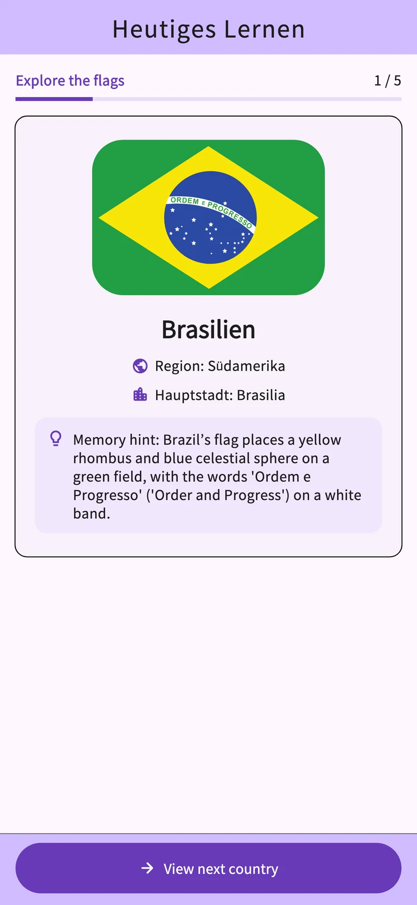
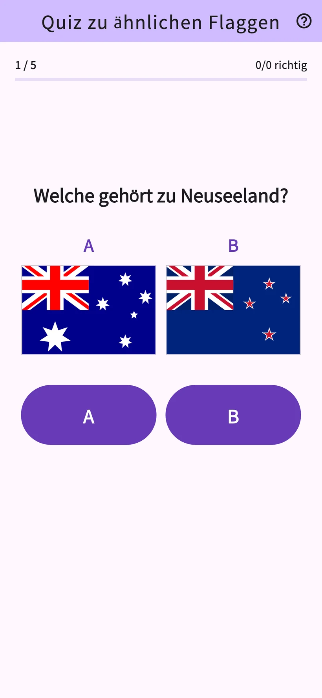
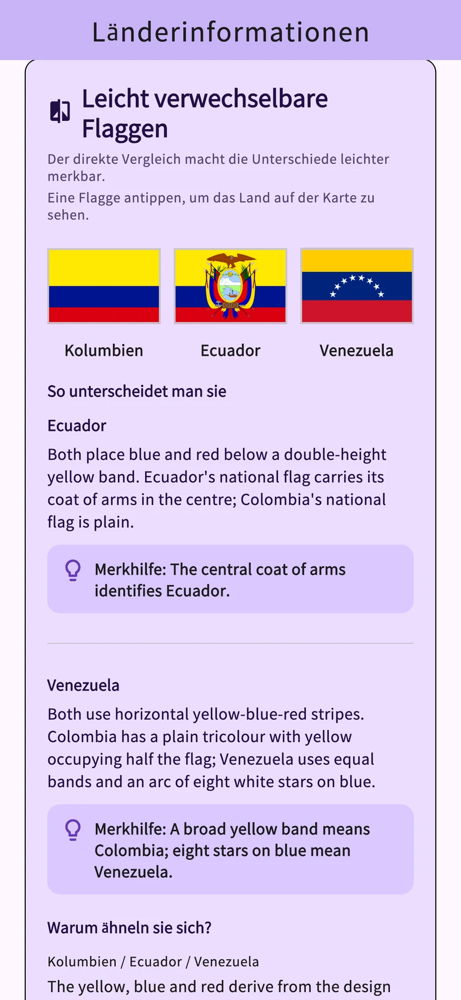
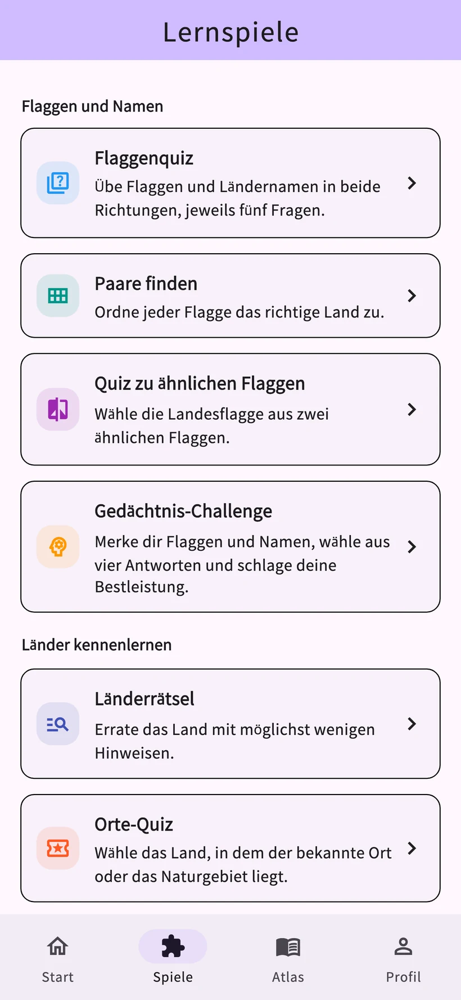

01
Flaggenquiz
Wähle das Land zur Flagge oder die Flagge zum Land.
Flaggen lernen: Awa Pop
Lerne Flaggen und Hauptstädte von 206 Ländern und Gebieten.
Tägliche Lerneinheiten und acht Spiele helfen dir, dein Wissen zu prüfen.
iPhone & Android · Kostenloser Download mit In-App-Käufen


Echte Ansichten aus der App
Lerne Flaggen und Ländernamen und prüfe dein Wissen im Quiz. Die Wiederholungen richten sich nach deinem Lernverlauf.
Die Fortschrittsansicht zeigt Beispieldaten. Detaillierte Lernanalysen sind mit Study Plus verfügbar.
Vergleiche Farben und Muster, um die Unterschiede zu erkennen. Probiere es mit den Flaggen von Frankreich und Italien.
Interaktives Beispiel für diese Website zum Unterscheiden von Flaggen. Die Darstellung weicht von der App ab.
Übe Flaggen, Ländernamen, Sehenswürdigkeiten und Nachbarländer. Wähle ein Spiel passend zu deinem Lernthema.
Wähle das Land zur Flagge oder die Flagge zum Land.
Verbinde jede Flagge mit dem passenden Ländernamen.
Wähle aus zwei ähnlichen Flaggen die richtige aus.
Merke dir Flaggen und Ländernamen und beantworte Multiple-Choice-Fragen.
Erkenne das Land anhand der nach und nach angezeigten Hinweise.
Erkenne Länder anhand von Sehenswürdigkeiten und Naturerbestätten.
Vergleiche Bevölkerung, Fläche und weitere Zahlen zweier Länder.
Wähle die Länder mit einer gemeinsamen Landgrenze.


Flaggen, Hauptstädte, Karten, Ursprünge und Kultur von 206 Ländern und Gebieten. Erfahre mehr über das Land, das dich im Quiz neugierig gemacht hat.
Entdecke Kultur und Empfehlungen aus den Ländern und Gebieten der Beitragenden. Beiträge werden übersetzt und geprüft, bevor sie in den App-Sprachen erscheinen.
Ein Spitzname ist freiwillig. Du kannst Beiträge melden oder ausblenden. YouTube-Videos öffnen sich außerhalb der App.
Tägliches Lernen
Ein verfügbares Belohnungsvideo fügt der gewählten Kategorie für diesen Tag 3 Nutzungen hinzu. Öffnest du ein Land am selben Tag erneut, verbrauchst du keine weitere Nutzung.
Unbegrenzt und ohne Werbung
Monats- und Jahresabo mit automatischer Verlängerung
Berechtigte Nutzer können das Monatsabo 1 Monat kostenlos testen. Das Jahresabo hat keinen kostenlosen Testzeitraum.
Preis, Testvoraussetzungen, Kosten nach dem Test und Verlängerungszeitraum findest du im Kaufbildschirm der App.
Die App unterstützt 10 Sprachen: Japanisch, Englisch, Spanisch, Deutsch, Koreanisch, Thai, Indonesisch, Französisch, brasilianisches Portugiesisch und traditionelles Chinesisch (Taiwan).
Die tägliche Lerneinheit und reguläre Wiederholungen sind kostenlos. Pro Tag kannst du Details zu 3 verschiedenen Ländern öffnen und im Spiele-Tab insgesamt bis zu 3 Spiele starten. Ein verfügbares Belohnungsvideo fügt der gewählten Kategorie für diesen Tag 3 Nutzungen hinzu.
Berechtigte Nutzer können das Monatsabo 1 Monat kostenlos testen. Das Jahresabo hat keinen kostenlosen Testzeitraum. Preise und Voraussetzungen stehen im Kaufbildschirm der App.
Du musst dich weder registrieren noch anmelden. Länderberichte und Feedback kannst du direkt in der App senden.
Deine Lernaufzeichnungen werden auf dem Gerät gespeichert. Es gibt keine automatische Synchronisierung mit anderen Geräten. Das Wiederherstellen von Käufen und die Übertragung von Lernaufzeichnungen sind getrennte Funktionen.
Wer sich für Flaggen und Geografie interessiert, kann im eigenen Tempo lernen. Die App enthält Werbung, optionale Käufe, Beiträge und externe Links. Kleine Kinder sollten die App gemeinsam mit einer erwachsenen Bezugsperson nutzen.
Vor dem Senden stimmst du den Beitragsregeln, der Übersetzung und der Veröffentlichung zu. Beiträge erscheinen nach Übersetzung und Prüfung. Ein Spitzname ist freiwillig. Du kannst eigene Beiträge löschen und Beiträge melden oder ausblenden.
Probiere die täglichen Lerneinheiten und acht Spiele in der App aus.
iPhone & Android · Kostenloser Download mit In-App-Käufen